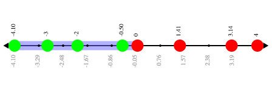
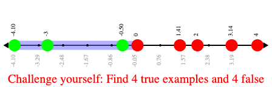

Simple Inequalities
(Also available in Pyret)
Students identify solutions and non-solutions of inequalities using an interactive starter file. This lesson also reviews the Boolean datatype.
|
Lesson Goals |
Students will be able to:
|
|
Student-Facing Lesson Goals |
|
|
Materials |
|
|
Supplemental Resources |
|
|
Key Points for the Facilitator |
|
Boolean-
a type of data with two values: true and false
data type-
a way of classifying values, such as: Number, String, Image, Boolean, or any user-defined data structure
equation-
a mathematical description of the relationship between two variables or quantities, in which they are equal
inequality-
a mathematical description of the relationship between two variables or quantities, in which they are not necessarily equal
solution set-
the set of all values or coordinate pairs that will make an equation, inequality, set of equations or set of inequalities true
| Introducing Booleans | 20 minutes |
Launch
Students should be logged into WeScheme.
Ask students to evaluate Circles of Evaluation for simple expressions they’ve seen before, and ask them to convert them into code.
-
+ 1 2 -
- 4 5 -
* 8 0
Then show them unfamiliar Circles of Evaluation, and ask them to hypothesize what they think they mean, what they will evaluate to, and what the code would look like.
-
> 1 2 -
< 4 5 -
= 8 0
Have students convert these Circles to code and type them in. What did they evaluate to? What do they think the outputs mean?
Values like true and false obviously aren’t Numbers or Images. But they also aren’t Strings, or else they would have quotes around them. We’ve found a new data type, called a Boolean.
Investigate
Have students open the Boolean Starter File.
-
Explore the five functions in this starter file:
odd?,even?,less-than-one?,continent?, andprimary-color? -
All five functions produce Booleans. Through your exploration, see if you can come up with an explanation of what a Boolean is.
A Boolean is just another data type, like Numbers or Images. But unlike the others there are only two values: true and false.
-
Turn to Boolean Functions and use the starter file to complete the questions, identifying inputs that will make each function produce
true, and inputs that will make each functionfalse.
Common Misconceptions
-
Many students - especially traditionally high-achieving ones - will be very concerned about writing examples that are "wrong." The misconception here is that an expression that produces
falseis somehow incorrect. You can preempt this by explaining that our Boolean-producing functions should sometimes return false.
Synthesize
-
Students will see functions on this page that they’ve never encountered before! But instead of answering their questions, encourage them to make a guess about what they do, and then type it in to discover for themselves.
-
Explicitly point out that everything they know still works! They can use their reasoning about Circles of Evaluation and Contracts to figure things out.
| Introducing Inequalities | 20 minutes |
Overview
Students discover (or expand their understanding of) inequalities by identifying solutions and non-solutions and connecting expressions to graphic representations.
Launch
How are equations different from inequalities?
Equations typically have finite solution sets: there’s only one answer for an unknown, or perhaps several answers. Inequalities, on the other hand, can have infinite solutions. Inequality expressions divide all of the numbers in the universe into two categories: solutions and non-solutions.
It is important that students learn to recognize that there are many possible solutions and non-solutions to an inequality and are able to identify whether or not a given number is or isn’t part of the solution set.
-
We are going to practice identifying whether or not a given number is part of the solution set.
-
Open the Simple Inequalities Starter File and click "Run".
-
Analyze the graph that appears (image below), as well as the provided code (lines 10, 18, and 26).

🖼Show image -
What do you Notice? What do you Wonder?
{kind=link}
Students might observe the following:
-
This starter file includes a special
inequalityfunction that takes in a function (which tests numbers in an inequality) and a list of 8 numbers (to test in the function). -
When we click "Run", we see a graph of the inequality on a number line.
-
The solution set is shaded in blue.
-
The 8 numbers provided in the list are shown as dots on the numberline. They will appear:
-
green when they’re part of the solution set
-
red when they are non-solutions
-
-
Look at line 18. Edit the list of values by deleting one of the
-symbols. -
Hit "Run". Examine the graph that appears (sample image below).

🖼Show image -
How is this graph different from the one you first produced?
{kind=link}
A successful input in this starter file will include 4 solutions and 4 non-solutions; in other words, the image returned will show 4 green dots and 4 red dots.
When students modify the list of numbers, they will see there are now 5 red dots and 4 green dots - along with a message that says, "Challenge yourself: Find 4 true examples and 4 false".
Investigate
-
Open to the Simple Inequalities and complete it with a partner, identifying solutions and non-solutions to each inequality and testing them in the Simple Inequalities Starter File.
-
For each inequality, you must find four solutions and four non-solutions.
-
Try using negatives, positives, fractions and decimals as you generate your lists.
Synthesize
-
What patterns did you observe in how the inequalities worked?
🔗Additional Exercises:
These materials were developed partly through support of the National Science Foundation,
(awards 1042210, 1535276, 1648684, and 1738598).  Bootstrap by the Bootstrap Community is licensed under a Creative Commons 4.0 Unported License. This license does not grant permission to run training or professional development. Offering training or professional development with materials substantially derived from Bootstrap must be approved in writing by a Bootstrap Director. Permissions beyond the scope of this license, such as to run training, may be available by contacting contact@BootstrapWorld.org.
Bootstrap by the Bootstrap Community is licensed under a Creative Commons 4.0 Unported License. This license does not grant permission to run training or professional development. Offering training or professional development with materials substantially derived from Bootstrap must be approved in writing by a Bootstrap Director. Permissions beyond the scope of this license, such as to run training, may be available by contacting contact@BootstrapWorld.org.